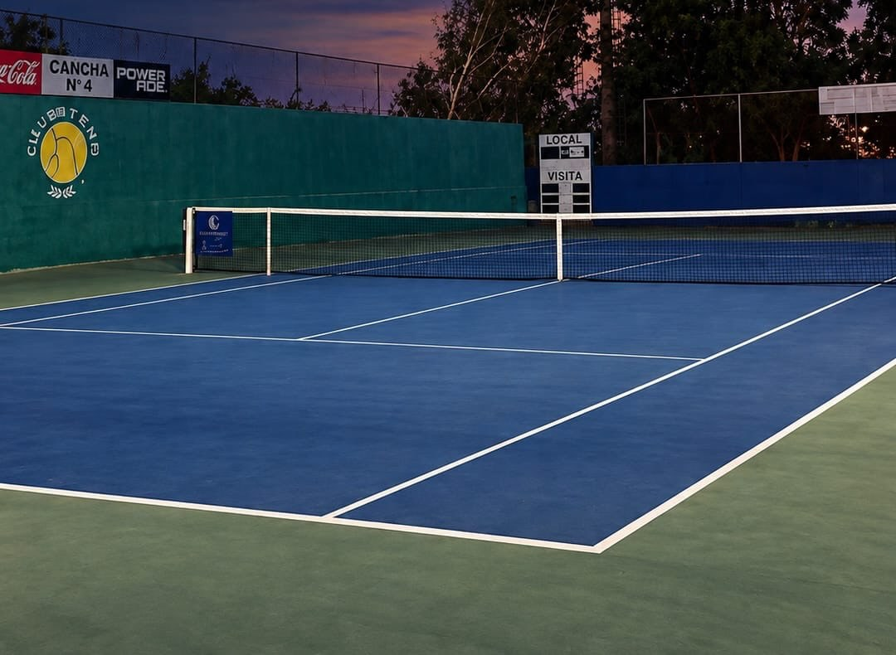
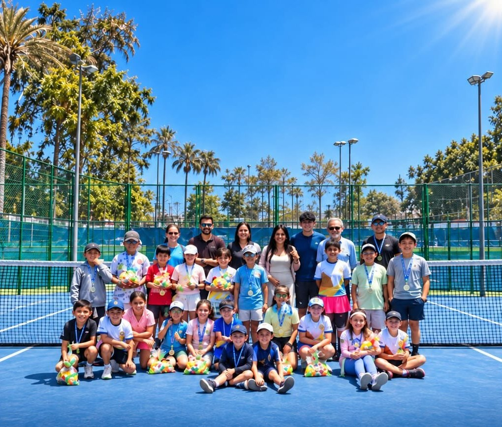
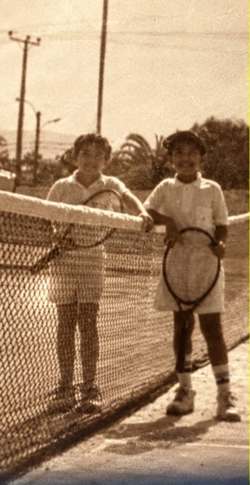
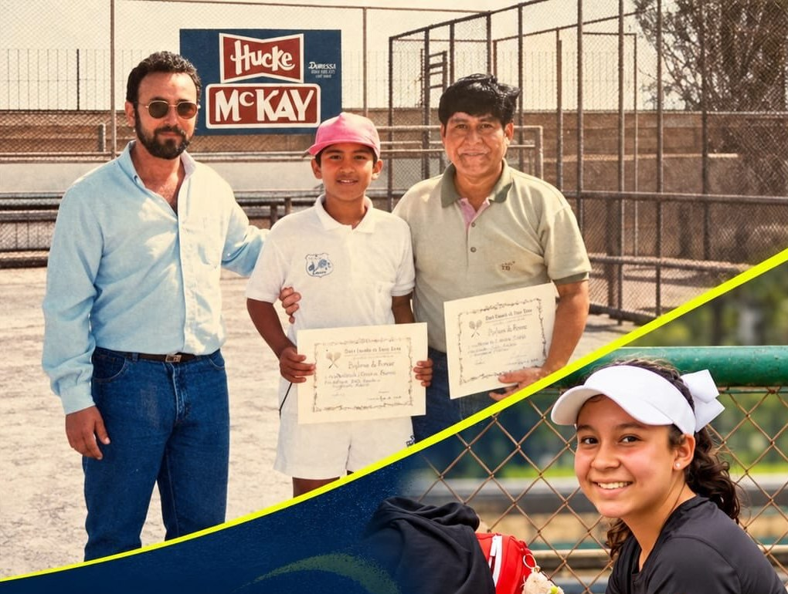
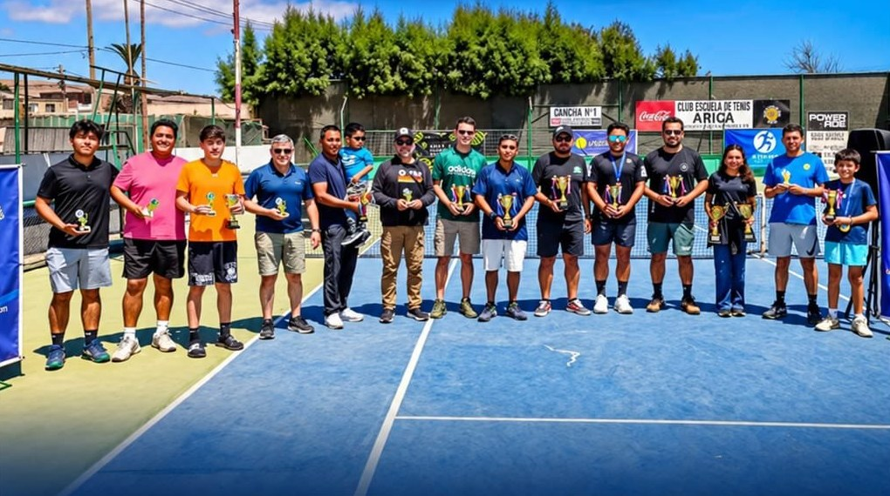

Una historia que merece
seguir jugando.
Por más de 40 años, el Club Escuela de Tenis Arica ha sido el hogar donde niñas, niños, familias y adultos mayores aprenden, compiten y conviven. Hoy nos enfrentamos a una orden de desalojo municipal que pone en riesgo este espacio de todos.

¿Es justo que se queden sin un lugar donde entrenar?
"No es solo un recinto deportivo; es el espacio donde cientos de jóvenes aprenden disciplina, respeto y vida sana."
Súmate con tu Firma40 Años de Memoria frente al Desalojo
Haz scroll hacia abajo para recorrer cómo nació el club, cómo se transformó en tradición familiar y por qué hoy nos movilizamos para protegerlo.
Pioneros y las Primeras Canchas
Con el Morro de fondo y el entusiasmo de un grupo de vecinos y profesores apasionados, nace la escuela de tenis. Niños con raquetas clásicas comenzaron a formarse en las primeras clínicas deportivas y torneos locales.

"Mi padre jugó aquí. Yo jugué aquí. Ahora mi sobrina juega aquí."
El club trascendió como una institución formadora de vida. Los niños de los años 80 crecieron y trajeron a sus propios hijos y sobrinos. Tres generaciones han compartido la misma red, forjando un lazo social imborrable para Arica.

Canchas Llenas y Formación Diaria
El club no está en abandono: está más vivo que nunca. Todas las semanas entrenan decenas de menores en sus escuelas de iniciación, deportistas federados ganando medallas regionales y adultos mayores que encuentran en el tenis salud física y mental.

La Solicitud de Desalojo Municipal
El alcalde de la Municipalidad de Arica, Orlando Vargas, solicitó el desalojo del predio. Una decisión que deja a cientos de personas sin su lugar de entrenamiento e interrumpe procesos deportivos construidos con esfuerzo autónomo durante cuatro décadas.
"Alcalde Orlando Vargas, conversemos"
El tenis de Arica no debería perder espacios. Nuestra propuesta es constructiva y abierta: sentémonos a conversar, firmemos convenios de colaboración y cuidemos juntos un patrimonio que beneficia a toda la ciudadanía.

El Tiempo Pasa, la Pasión Permanece
Arrastra el deslizador interactivo para comparar a las primeras promesas de la década de 1980 con los alumnos que entrenan hoy en la misma cancha.
Las Voces del Club Escuela de Tenis
Testimonios en primera persona de profesores, familias y ex-alumnos que defienden la permanencia de nuestras canchas.
Voz en el Concejo Comunal
"Presentamos con fuerza y claridad la postura del club: cuatro décadas de autogestión, formación deportiva y derecho a la continuidad en nuestras canchas."
Deportistas y Alumnos
"Aquí aprendemos respeto, juego limpio y superación personal. Quitarle el predio al tenis es arrebatarle el futuro deportivo a la juventud ariqueña."
 Adultos Mayores
Adultos Mayores
Socios Históricos y Jubilados
"Para nosotros el club no es solo deporte, es nuestro espacio de encuentro, vitalidad y salud para los adultos mayores. Exigimos respeto por nuestra trayectoria."
Alcalde Orlando Vargas:
Conversemos por el Tenis de Arica.
Los socios, profesores, familias, alumnos infantiles y adultos mayores que formamos el Club Escuela de Tenis Arica nos dirigimos respetuosamente a usted para manifestar nuestra honda inquietud ante la orden de desalojo de nuestro recinto.
Durante más de cuatro décadas hemos protegido este espacio con financiamiento autónomo, formando a deportistas que representan a nuestra región y ofreciendo actividad física sana a niños y personas de la tercera edad.
Solicitamos abrir formalmente una Mesa de Diálogo para presentar un plan conjunto de convenios municipales y proyectos comunitarios para la ciudad.
Súmate con tu firma ciudadana:
Tu adhesión respalda el llamado al diálogo ante las autoridades.
Deja tu Foto y tu Momento Feliz en el Club
"Este club es parte de nosotros." 40 años de historias, emociones y recuerdos que merecen seguir viviendo.
 1980s · Primeras canchas
1980s · Primeras canchas
 1990s · Premiación histórica
2026 · Pasión formativa
Comunidad · Familias unidas
1990s · Premiación histórica
2026 · Pasión formativa
Comunidad · Familias unidas

Torneo · Cancha N°1Publica tu Recuerdo
Se sumará al muro en tiempo real: